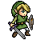

JS html events | image load
onload image
When this image loads you will get a pop up
If the pop up does not happen; you have JS turned off

Dude will you freaking turn on your JS just for a Minute will ya?